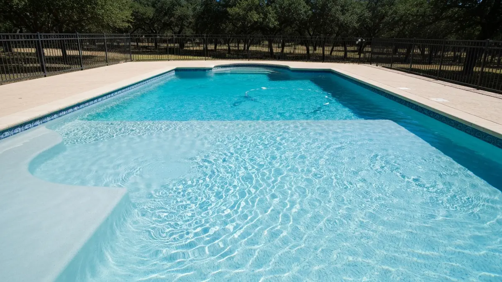

New Braunfels is one of the fastest-growing cities in Texas, with a population approaching 98,000 and new subdivisions stretching from Gruene to the I-35 corridor. Known for Comal River tubing, the Schlitterbahn waterpark, and its proud German heritage, this Hill Country community embraces outdoor living year-round. Backyard pools are a staple here, and the long swim season — often running April through October — puts heavy demands on pool surfaces. Hard water from the Edwards Aquifer accelerates wear on plaster finishes, making regular resurfacing essential. Alamo Pool Resurfacing serves New Braunfels homeowners with durable finishes built to handle local water chemistry and the relentless Texas sun. Whether your pool is in a new Veramendi development or an established neighborhood near Landa Park, we deliver expert results.

Our Pool Resurfacing Process
- Free On-Site Estimate — We visit your New Braunfels property to inspect the pool surface and discuss options.
- Surface Preparation — We drain and prep the pool, removing old plaster and cleaning to bare shell.
- Material Selection — Choose from plaster, pebble, quartz, or glass bead finishes.
- Expert Application — Our team applies the new surface with precision for a smooth, durable finish.
- Fill, Balance & Startup — We refill, balance water chemistry, and guide you through the curing process.
Why New Braunfels Homeowners Trust Alamo Pool Resurfacing
- Hard Water Specialists — We understand the Edwards Aquifer water chemistry and recommend finishes that resist the calcium scale buildup common in New Braunfels.
- Licensed, Bonded & Insured — Full coverage and proper licensing give you peace of mind on every project in Comal County.
- Fast Turnaround — Most New Braunfels pool resurfacing jobs are completed in 5 to 8 days, so you are swim-ready before the next heat wave hits.
- Local Knowledge — From the neighborhoods around Landa Park to the new builds near Gruene, we know New Braunfels pools inside and out.

Frequently Asked Questions — Pool Resurfacing in New Braunfels
How much does pool resurfacing cost in New Braunfels?
Pool resurfacing in New Braunfels typically ranges from $3,500 to $12,000 depending on pool size and finish type. Standard plaster runs $3,500 to $5,500, quartz aggregate costs $5,500 to $8,500, and premium pebble finishes like PebbleTec range from $7,000 to $12,000. We provide free on-site estimates with no obligation.
What pool finish holds up best in New Braunfels hard water?
New Braunfels draws water from the Edwards Aquifer, which is notably hard with calcium levels often exceeding 250 mg/L. Quartz and pebble aggregate finishes resist calcium scale buildup far better than standard plaster, lasting 15 to 25 years compared to 8 to 12 years for plaster under local water conditions. We recommend these premium options for New Braunfels homeowners.
When is the best time to resurface a pool in New Braunfels?
The best time to resurface your New Braunfels pool is during fall or early spring when temperatures are mild and you are not using the pool daily. Most projects take 5 to 8 days from drain to swim-ready. Scheduling between October and March lets you have a fresh surface ready for the long Texas swim season that runs April through October.
Need Pool Resurfacing in New Braunfels? Call Now
We're your local pool resurfacing experts serving New Braunfels and all surrounding areas.
📞 Call (726) 268-5597